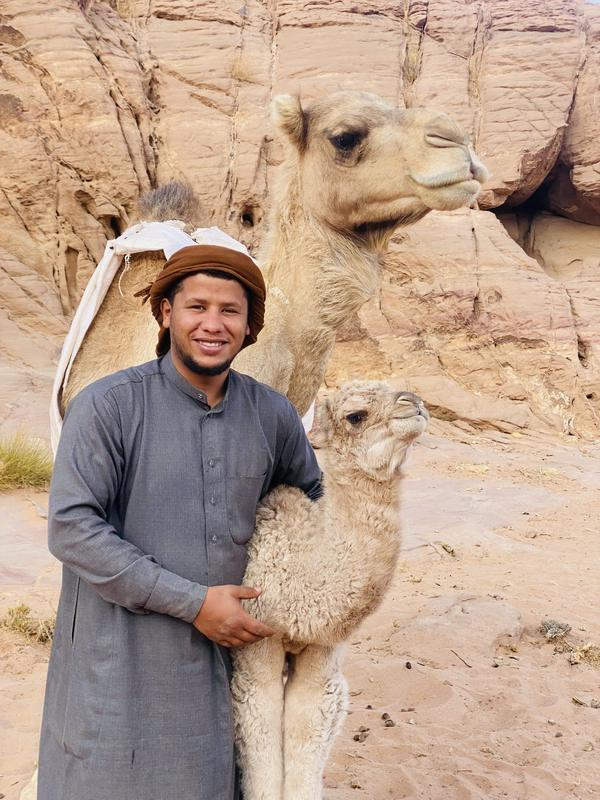

ザイードと兄弟たちのご紹介
「私はザイード。ワディ・ラムで生まれ育ちました。私の家族は何世代にもわたり、この砂漠で遊牧のベドウィンとして暮らしてきました。私は砂漠で育ち、その風景や伝統、暮らし方を家族から学びました。」
今は兄弟たちと一緒にキャンプを営んでいます。砂漠ツアーとキャンプの運営で長年の経験があり、細かなところまで気を配っています。ゲストの皆さんには、ワディ・ラムを離れてからもずっと心に残る、美しい思い出を持ち帰っていただきたいと願っています。
Desert Tree Camp & Tours
お迎えの場所
ワディ・ラム村でゲストをお迎えし、一緒に車でキャンプへ向かいます。メッセージをいただければ、時間を確認してお知らせします。
お越しになる前に
ワディ・ラムへの行き方は?
ワディ・ラム村は、アカバから車で約1時間、ペトラから約2時間です。村でお迎えします。正確な集合場所はGoogle マップに載っており、WhatsAppでもご確認します。
料金には何が含まれますか?
宿泊付きプログラムにはすべて、共用バスルームのベドウィンテント、夕食、朝食が含まれます。1日ジープツアーには昼食も含まれます。
子どもも料金がかかりますか?
3歳未満のお子さまは無料です。3〜10歳は半額、11歳からは大人料金となります。
支払い方法は?
到着時に現金でお支払いください。オンラインでのお支払いは一切ありません。
キャンセルできますか?
はい。お支払いは到着時なので、キャンセルは無料です。計画のため、メッセージだけお送りください。
グループだと料金が安くなるのはなぜですか?
ジープとガイドの料金は1名でも複数名でも同じなので、人数が多いほど1人あたりの料金は安くなります。
何を持っていけばいいですか?
日中は帽子・日焼け止め・サングラス、歩きやすいつま先の覆われた靴、そして暖かい上着をお持ちください。砂漠の夜は冷えます。特に11月から3月は寒くなります。
どのくらいの体力が必要ですか?
ジープツアー、ラクダ乗り、星空観察はどなたでも楽しめます。ジャバル・ブルダとウム・アド・ダミ山は急な登りや岩をよじ登る箇所があるので、経験を教えていただければアドバイスいたします。
営業期間は?
一年中営業しており、いつでもご予約いただけます。